baseMean log2FoldChange lfcSE stat pvalue
Gpr17 159.0450 -0.05890702 0.005351874 -11.006803 3.543541e-28
Pcdhb9 181.7831 0.04646533 0.005433934 8.550956 1.220728e-17
Hapln2 151.1742 0.05015503 0.006060622 8.275558 1.278549e-16
Flywch1 3903.4383 0.01168213 0.001469826 7.947968 1.895949e-15
Klhl1 25.9399 -0.08813600 0.011636957 -7.573801 3.624582e-14
Cabp7 200.0974 0.03986813 0.005401458 7.380994 1.571120e-13
padj gene group
Gpr17 5.015882e-24 Gpr17 Down with age
Pcdhb9 8.639706e-14 Pcdhb9 Up with age
Hapln2 6.032623e-13 Hapln2 Up with age
Flywch1 6.709289e-12 Flywch1 Up with age
Klhl1 1.026119e-10 Klhl1 Down with age
Cabp7 3.706534e-10 Cabp7 Up with age
# Universe = all tested genes with a padj (background)gene_universe <- res_age_df$gene[!is.na(res_age_df$padj)]# Significant age-DE genessig_age_all <- sig_age$genesig_age_up <- sig_age$gene[sig_age$padj <0.05& sig_age$log2FoldChange >0]sig_age_down <- sig_age$gene[sig_age$padj <0.05& sig_age$log2FoldChange <0]length(gene_universe); length(sig_age_up); length(sig_age_down)
[1] 14155
[1] 247
[1] 279
# Convert IDs to Entrez# Note: enrichGO() works fine with SYMBOLs and converts back to SYMBOL anyway so this is slightly redundant if we're correct... but KEGG needs Entrez universe_entrez <-bitr(gene_universe,fromType = id_type,toType ="ENTREZID",OrgDb = org.Mm.eg.db) %>%distinct(ENTREZID)sig_up_entrez <-bitr(sig_age_up,fromType = id_type,toType ="ENTREZID",OrgDb = org.Mm.eg.db) %>%distinct(ENTREZID)sig_down_entrez <-bitr(sig_age_down,fromType = id_type,toType ="ENTREZID",OrgDb = org.Mm.eg.db) %>%distinct(ENTREZID)nrow(universe_entrez); nrow(sig_up_entrez); nrow(sig_down_entrez)
dotplot(ego_up, showCategory =15, title ="GO BP – Genes up with age", label_format =60)
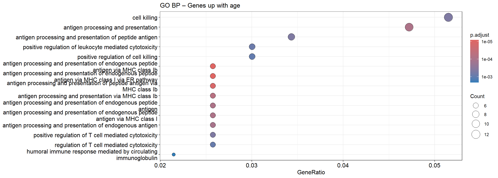
dotplot(ego_down, showCategory =15, title ="GO BP – Genes down with age", label_format =60)
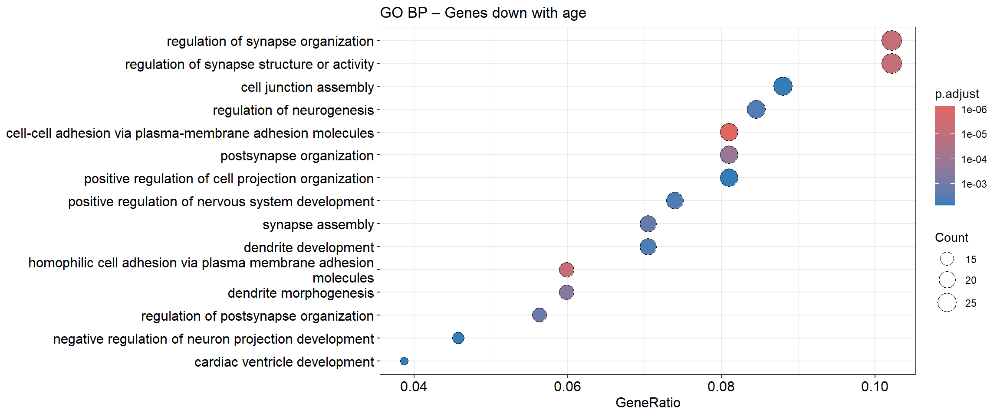
ego_up_simpl <-simplify( ego_up,cutoff =0.7, by ="p.adjust",select_fun = min)dotplot(ego_up_simpl, showCategory =15, title ="GO BP – up with age (simplified)", label_format =60)
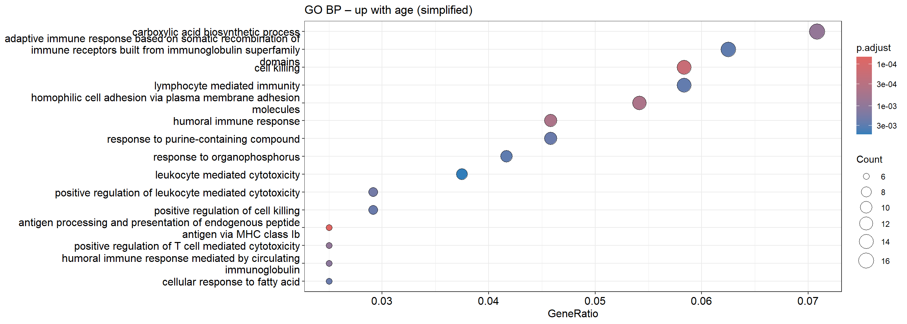
ego_down_simpl <-simplify( ego_down,cutoff =0.7, by ="p.adjust",select_fun = min)dotplot(ego_down_simpl, showCategory =15, title ="GO BP – down with age (simplified)", label_format =60)
dotplot(ego_cc_up, showCategory =15, title ="GO CC – Genes up with age", label_format =60)
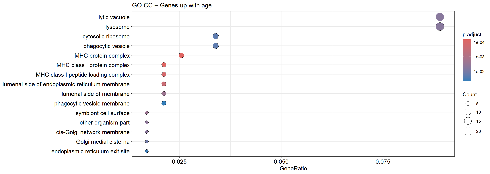
dotplot(ego_cc_down, showCategory =15, title ="GO CC – Genes down with age", label_format =60)
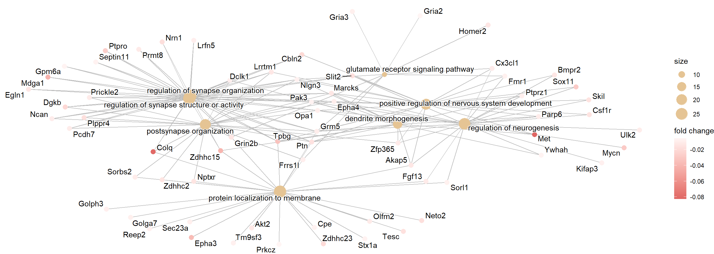
dotplot(ego_mf_up, showCategory =15, title ="GO MF – Genes up with age", label_format =60)
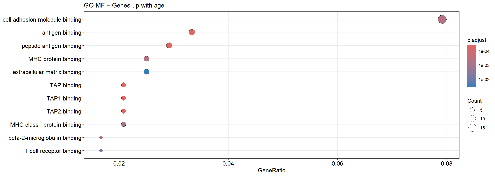
dotplot(ego_mf_down, showCategory =15, title ="GO MF – Genes down with age", label_format =60)
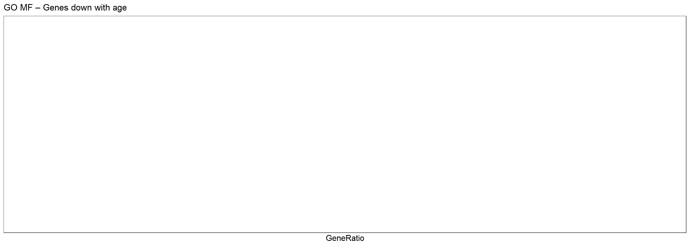
GO CC and MF simplified
ego_cc_up_simpl <-simplify(ego_cc_up,cutoff =0.7,by ="p.adjust",select_fun = min)dotplot(ego_cc_up_simpl, showCategory =15,title ="GO CC – up with age (simplified)",label_format =60)
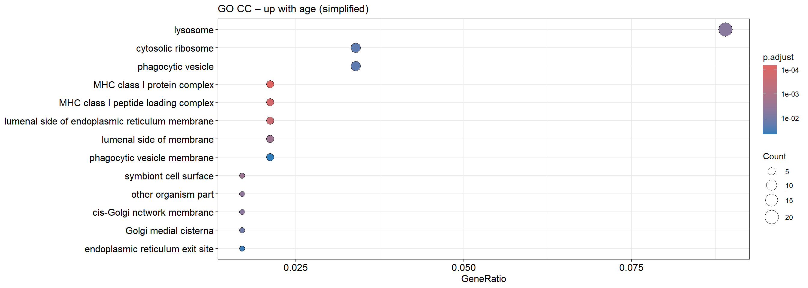
ego_cc_down_simpl <-simplify(ego_cc_down,cutoff =0.7,by ="p.adjust",select_fun = min)dotplot(ego_cc_down_simpl, showCategory =15,title ="GO CC – down with age (simplified)",label_format =60)
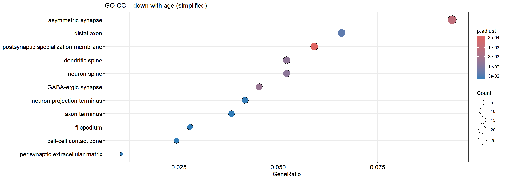
ego_mf_up_simpl <-simplify(ego_mf_up,cutoff =0.7,by ="p.adjust",select_fun = min)dotplot(ego_mf_up_simpl, showCategory =15,title ="GO MF – up with age (simplified)",label_format =60)
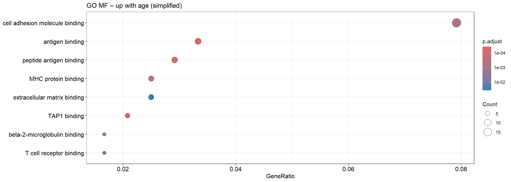
ego_mf_down_simpl <-simplify(ego_mf_down,cutoff =0.7,by ="p.adjust",select_fun = min)dotplot(ego_mf_down_simpl, showCategory =15,title ="GO MF – down with age (simplified)",label_format =60)
dotplot(reactome_up, showCategory =15, title ="Reactome – Genes up with age", label_format =60)
dotplot(reactome_down, showCategory =15, title ="Reactome – Genes down with age", label_format =60)
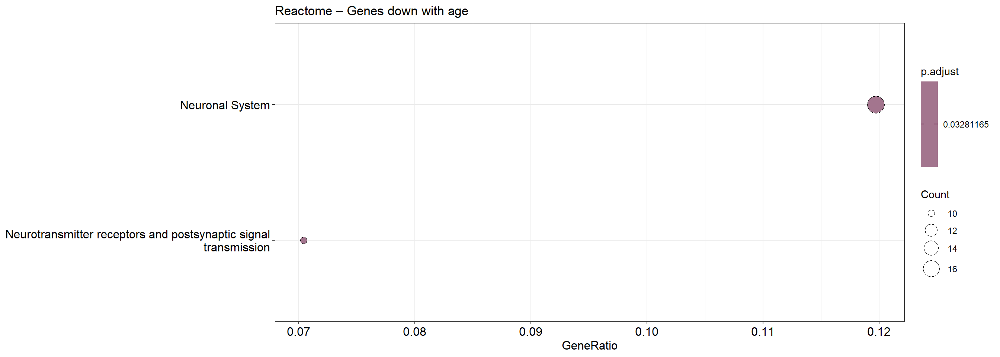
Save results
## Save resultssaveRDS(ego_up, "results/go_bp_age_up.rds")saveRDS(ego_down, "results/go_bp_age_down.rds")saveRDS(ekegg_up, "results/kegg_age_up.rds")saveRDS(ekegg_down, "results/kegg_age_down.rds")saveRDS(ego_up_simpl, "results/go_bp_age_up_simpl.rds")saveRDS(ego_down_simpl, "results/go_bp_age_down_simpl.rds")# ReactomesaveRDS(reactome_up, "results/reactome_age_up.rds")saveRDS(reactome_down, "results/reactome_age_down.rds")# GO CCsaveRDS(ego_cc_up, "results/go_cc_age_up.rds")saveRDS(ego_cc_down, "results/go_cc_age_down.rds")saveRDS(ego_cc_up_simpl, "results/go_cc_age_up_simpl.rds")saveRDS(ego_cc_down_simpl,"results/go_cc_age_down_simpl.rds")# GO MFsaveRDS(ego_mf_up, "results/go_mf_age_up.rds")saveRDS(ego_mf_down, "results/go_mf_age_down.rds")saveRDS(ego_mf_up_simpl, "results/go_mf_age_up_simpl.rds")saveRDS(ego_mf_down_simpl,"results/go_mf_age_down_simpl.rds")
Ideas / ToDo
# GO Annotations for CC (cellular components) and MF (molecular functions) ontologies# Use simplify on GO BP -> similar method for KEGG?# Try out GSEA (gene set enrichment analysis) instead of ORA (over-representation analysis)# Try out other pathway databases, e.g. ReactomePA# Visualize enriched pathways with pathview